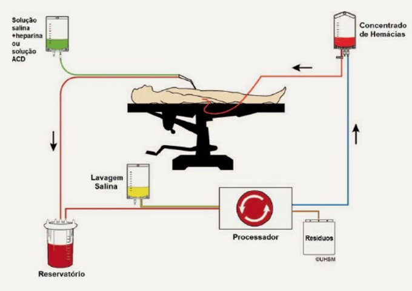
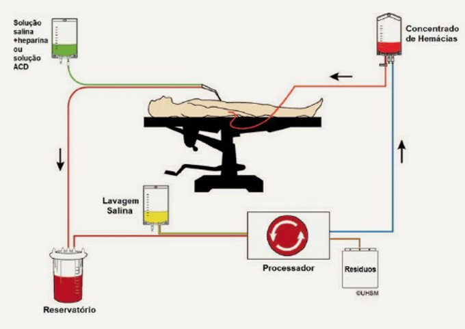

Princípios Técnicos:
Quando uma perda de sangue importante é esperada, a coleta, processamento e reinfusão de sangue autólogo está se tornando mais amplamente usada e acessível.

Quando uma perda de sangue importante é esperada, a coleta, processamento e reinfusão de sangue autólogo está se tornando mais amplamente usada e acessível.
